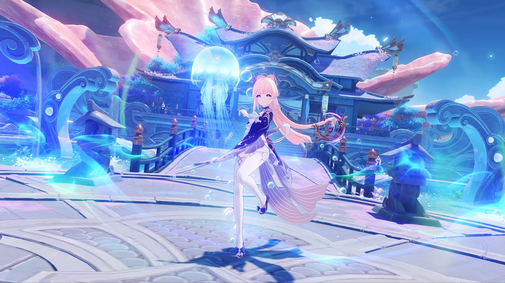

Daughter of the Yashiro Commission's Kamisato Clan from Inazuma.
Dignified and elegant, wise and determined.
Sincere and pleasant to others.
Universally loved by the Inazuma people, she has earned the title of Shirasagi Himegimi.
A talented pyrotechnician.
The current owner of Naganohara Fireworks known as the "Queen of the Summer Festival."
A girl filled with fiery passion.
The uncompromising childish innocence and the obsession with craftsmanship intertwine in her to create a spectacular blaze.
A wandering samurai from Inazuma with a modest and gentle personality.
Beneath a youthful and carefree demeanor lies a heart that hides a great many burdens from the past.
Seemingly easygoing, Kazuha has his own code of conduct.
Sayu, Shuumatsuban's resident ninja, is obsessed with sleeping and growing taller.
She has mastered all kinds of ninjutsu to run away and hide in pursuit of opportunities to laze around and sleep.
Such an extraordinary skillset may have very unexpected uses.
The Raiden Shogun is the awesome and terrible power of thunder incarnate, the exalted ruler of the Inazuma Shogunate.
With the might of lightning at her disposal, she commits herself to the solitary pursuit of eternity.
Leader of the Tenryou Commission's forces.
A charismatic woman who acts as swiftly as a storm wind and always honors her word.
She bears the title of "Devotee of the Divine" and has sworn her allegiance to the Raiden Shogun.
The eternity that the Shogun pursues is the cause that she is willing to fight for.

Despite her delicate appearance, she is the leader of the Sangonomiya resistance.
She is a wise and resourceful military advisor.
Although she always wears a very serene smile, she actually has everything arranged and in her grasp.
She is the brains of the forces.
